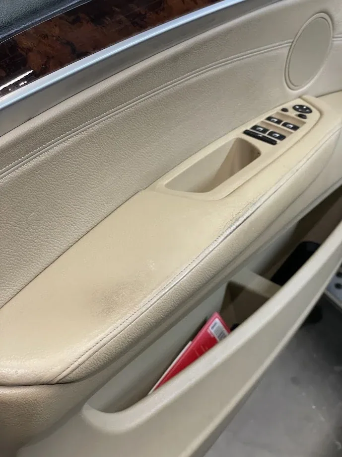

02 / SPECIALIZOVANÁ PÉČEOchrana.
Ochrana.
Obnova.
Keramická ochrana laku a renovace kožených povrchů. Dvě oblasti, ve kterých rozhoduje správný postup.

01 / KERAMIKAOchrana laku
Ochrana laku
NASIOL.
Keramické povlaky NASIOL jsou určené k ochraně povrchu laku. V nabídce jsou varianty s deklarovanou životností 3 nebo 5 let.
Keramická ochrana pomáhá chránit povrch a zvýraznit vzhled laku. Výsledná životnost závisí na produktu a údržbě.
Poptat keramiku ↗02 / POSTUPBalíček s tříletou
Balíček s tříletou
keramikou.
Jednotlivé kroky přípravy a ochrany povrchu.
- Ruční mytí karoserie
- Dekontaminace laku
- Jednokrokové leštění pro zvýraznění lesku
- Odmaštění laku
- Certifikovaný keramický povlak na 3 roky
Cenu a dostupnost balíčku si potvrďte při objednání.
03 / RENOVACE KŮŽEVraťte detailům
Vraťte detailům
jejich vzhled.
Čištění, opravy poškození a obnova barvy automobilové kůže systémem Fenice.


Opravy protržené nebo propálené kůže, barvení metodou Touch Up a Air Brush, opravy ošoupaných bočnic a madel i renovace volantů bez nutnosti přešití.
Poptat renovaci ↗Domluvme péči
o váš vůz.
↗Pro termín a konkrétní rozsah služeb kontaktujte studio přímo.